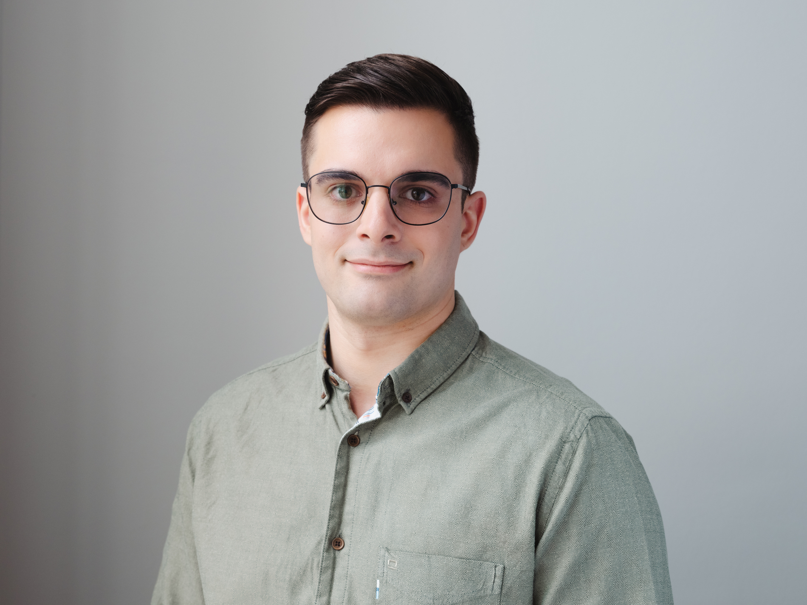

Samuel Jalalian
I am a PhD student at the Chair of Social Structures and Social Inequalities (Prof. Dr. Fabian T. Pfeffer) at Ludwig-Maximilians-Universität München. My research examines how family background shapes people's life chances, with a particular focus on educational inequality. I am especially interested in the role of parental wealth and in policies that can reduce inequalities in opportunity, such as student aid programs.Ich bin Doktorand am Lehrstuhl für Soziale Strukturen und soziale Ungleichheiten (Prof. Dr. Fabian T. Pfeffer) an der Ludwig-Maximilians-Universität München. In meiner Forschung untersuche ich, wie das Elternhaus die eigenen Lebenschancen prägt, mit einem besonderen Fokus auf Bildungsungleichheiten. Besonders interessiere ich mich für die Rolle elterlichen Vermögens und für Maßnahmen, die Chancenungleichheiten verringern können, etwa Studienförderung.
Manuscripts in ProgressManuskripte in Arbeit
Wealth as Private Insurance: Unequal Protection against the Scarring Effects of Unemployment in the U.S. and Germany
Project DescriptionProjektbeschreibung
Losing a job can have lasting consequences. Even after finding work again, people often earn less than comparable workers who were continuously employed. This is known as wage scarring. In this project, we compare Germany and the United States to ask whether wealth can protect workers from these lasting losses. For example, wealthier people may be able to search longer for a suitable job or negotiate more confidently over pay.Arbeitslosigkeit kann langfristige Folgen für den Lohn haben. Selbst nachdem Menschen wieder eine Stelle gefunden haben, verdienen sie häufig weniger als vergleichbare Beschäftigte, die durchgehend gearbeitet haben. Dieses Phänomen wird als „Wage Scarring“ bezeichnet. In diesem Projekt vergleichen wir Deutschland und die USA und untersuchen, ob Vermögen Beschäftigte vor diesen langfristigen Lohneinbußen schützen kann. Vermögendere Personen könnten sich beispielsweise länger Zeit für die Suche nach einer passenden Stelle nehmen oder selbstbewusster über ihr Gehalt verhandeln.
AbstractAbstract
Job loss has detrimental and long-lasting effects on workers, including lower wages after reemployment. The size of these wage scars, however, depends on the safety nets available during unemployment. Whereas prior research has focused on public safety nets, particularly unemployment insurance, we extend this perspective by considering the private safety net provided by household wealth. Because access to wealth is unequally distributed, private insurance may reinforce the stratifying effects of unemployment on subsequent wage inequality. Comparing the United States and Germany allows us to assess how private wealth interacts with public insurance in buffering the effects of job loss. Drawing on two high-quality panel surveys (PSID and SOEP) and difference-in-differences estimators we show that in the United States, wage scars are larger among workers with little wealth than among workers with greater wealth, producing pronounced inequality in post-unemployment outcomes. We find no comparable pattern in Germany, suggesting that wealth becomes an important safety net primarily where public insurance is weak. Additional analyses show that even in the United States, household wealth protects only the wealthiest households and only during shorter unemployment spells. The effect of wealth on wage scars appears to operate mainly through differences in job-search strategies.Arbeitsplatzverlust hat nachteilige und langfristige Folgen für Beschäftigte, darunter niedrigere Löhne nach der Wiederbeschäftigung. Wie groß diese Lohneinbußen ausfallen, hängt jedoch von den während der Arbeitslosigkeit verfügbaren Absicherungen ab. Während sich die bisherige Forschung vor allem auf öffentliche Sicherungssysteme, insbesondere die Arbeitslosenversicherung, konzentriert hat, erweitern wir diese Perspektive um das private Sicherheitsnetz des Haushaltsvermögens. Da Vermögen ungleich verteilt ist, könnte private Absicherung die stratifizierenden Folgen von Arbeitslosigkeit für die spätere Lohnungleichheit verstärken. Der Vergleich zwischen den USA und Deutschland ermöglicht es uns zu untersuchen, wie privates Vermögen mit öffentlicher Absicherung zusammenwirkt, um die Folgen von Arbeitslosigkeit abzufedern. Auf Grundlage zweier Panelstudien (PSID und SOEP) und Difference-in-Differences-Schätzern zeigen wir, dass die Lohneinbußen in den USA bei Beschäftigten mit wenig Vermögen größer sind als bei Beschäftigten mit mehr Vermögen, wodurch ausgeprägte Ungleichheiten nach Arbeitslosigkeit entstehen. Für Deutschland finden wir kein vergleichbares Muster. Das deutet darauf hin, dass Vermögen vor allem dort zu einem wichtigen Sicherheitsnetz wird, wo die öffentliche Absicherung schwach ist. Zusätzliche Analysen zeigen, dass selbst in den USA Haushaltsvermögen nur die vermögendsten Haushalte und nur bei kürzeren Arbeitslosigkeitsphasen schützt. Der Zusammenhang zwischen Vermögen und Lohneinbußen scheint vor allem über Unterschiede in den Strategien der Arbeitssuche zu verlaufen.
Another Empty Promise of Grade Retention: Peer Effects of Classmate Retention on Promoted Students
Project DescriptionProjektbeschreibung
Grade retention, making students repeat a school year, is a common educational practice. Research, however, raises serious doubts about whether it benefits the students who are held back. Grade retention is also costly and socially selective, with some groups of students being more likely to repeat a grade than others. One remaining argument is that the other students may benefit when a lower-performing classmate leaves the class. This is often justified by the idea that the class becomes more homogeneous and that everyone can learn better as a result. This project tests whether those supposed benefits for classmates actually exist.Klassenwiederholungen sind eine verbreitete pädagogische Maßnahme. Die Forschung bezweifelt jedoch deutlich, dass die Maßnahme für Sitzenbleiber:innen nützlich ist. Klassenwiederholungen sind außerdem teuer und sozial selektiv, da einige Gruppen häufiger eine Klasse wiederholen als andere. Ein verbleibendes Argument für das Sitzenbleiben lautet, dass die übrigen Schüler:innen profitieren könnten, wenn eine leistungsschwächere Person die Klasse verlässt. Begründet wird dies unter anderem damit, dass die Klasse dadurch homogener werde und alle besser lernen könnten. Dieses Projekt prüft, ob solche Vorteile für die Mitschüler:innen tatsächlich bestehen.
AbstractAbstract
Grade retention is a common but costly educational practice and studies have repeatedly shown that, in many contexts, it offers no academic benefit to retained students. A remaining justification for its continued use is the presumed benefit for the promoted peers from whose class the retained student was removed. This study tests that assumption using longitudinal data from the German National Educational Panel Study (NEPS) and a difference-in-differences approach, focusing on grades and competencies from Grades 1 to 9. Results predominantly yield null findings, with a small positive effect on mathematics grades in lower secondary education (0.08–0.09 SD) as the only exception. Overall, the findings provide little support for presumed peer benefits as a justification for grade retention.Klassenwiederholungen sind eine verbreitete, aber kostspielige pädagogische Maßnahme. Studien haben wiederholt gezeigt, dass sie in vielen Kontexten keinen schulischen Nutzen für die Schüler:innen bringen, die eine Klasse wiederholen. Eine verbleibende Rechtfertigung für ihren Einsatz ist der vermutete Nutzen für die versetzten Mitschüler:innen, aus deren Klasse die zurückgestufte Person entfernt wurde. Diese Studie prüft diese Annahme mit Längsschnittdaten des Nationalen Bildungspanels (NEPS) und einem Difference-in-Differences-Ansatz. Im Fokus stehen Noten und Kompetenzen von Klasse 1 bis 9. Die Ergebnisse sind überwiegend Nullbefunde. Die einzige Ausnahme ist ein kleiner positiver Effekt auf Mathematiknoten in der Sekundarstufe I (0,08–0,09 SD). Insgesamt liefern die Analysen nur wenig Unterstützung dafür, vermeintliche Vorteile für Mitschüler:innen als Rechtfertigung für Klassenwiederholungen heranzuziehen.
Student Aid and Parental Wealth: A Blind Spot in the Pursuit of Equity?
Project DescriptionProjektbeschreibung
Germany's student aid program BAföG is designed to make university accessible to people from families with fewer financial resources. When determining need, the system considers students' own income and wealth as well as their parents' income, including income generated by assets. The parents' assets themselves, however, are not taken into account. Two families can therefore have the same income but still face very different financial circumstances. This project examines whether parental wealth matters for students' ability to cover the costs of higher education beyond income, whether students from wealthier families apply for BAföG less often, just as often, or even more often, and how much economic inequality in university enrollment and completion could be reduced if parental wealth were taken into account.Das BAföG soll auch Personen aus ärmeren Elternhäusern ein Studium ermöglichen. Bei der Bedarfsermittlung werden das eigene Einkommen und Vermögen der Studierenden sowie das Einkommen ihrer Eltern berücksichtigt, einschließlich Einkünften aus Vermögen. Die Vermögenswerte der Eltern selbst bleiben jedoch unberücksichtigt. Zwei Familien können daher dasselbe Einkommen haben und trotzdem in sehr unterschiedlichen finanziellen Situationen leben. Das Projekt untersucht, ob elterliches Vermögen über das Einkommen hinaus dafür relevant ist, Studienkosten zu bewältigen, ob Studierende aus vermögenderen Familien seltener, genauso häufig oder sogar häufiger BAföG beantragen und wie stark ökonomische Ungleichheiten im Studieneintritt und -abschluss sinken würden, wenn elterliches Vermögen beim BAföG berücksichtigt würde.
AbstractAbstract
Many need-based student aid programs, including Germany’s BAföG, assess parental income but not parental wealth holdings. Using German NEPS and SOEP data, this study examines what this omission means for economic inequality in higher education. It asks whether parental wealth affects students’ financing capacity beyond income, whether application behavior compensates for wealth-blind eligibility, and how a wealth-inclusive means test would alter economic gaps in university enrollment and completion. Regression analyses show similarly strong adjusted associations of parental wealth and income with financing capacity, even in Germany’s largely tuition-free system. Within income quintiles, wealthier students apply less often, partially compensating for wealth-blind eligibility, although some still receive aid. A counterfactual wealth-inclusive means test would reduce wealth gaps in enrollment and completion by [TBD] and [TBD] percent and income gaps by [TBD] and [TBD] percent. Means tests should therefore consider parental wealth alongside income, although most economic inequality would remain.Viele bedarfsabhängige Studienförderprogramme, darunter das deutsche BAföG, berücksichtigen das Einkommen der Eltern, nicht aber deren Vermögen. Anhand deutscher NEPS- und SOEP-Daten untersucht diese Studie, was das Vernachlässigen elterlicher Vermögenswerte für die ökonomische Ungleichheit im Hochschulbereich bedeutet. Im Paper untersuche ich, ob elterliches Vermögen die Finanzierungsmöglichkeiten von Studierenden über das Einkommen hinaus beeinflusst, ob das Antragsverhalten die vermögensblinde Anspruchsprüfung teilweise kompensiert und wie ein Bedürftigkeitstest, der Vermögen berücksichtigt, ökonomische Unterschiede bei Hochschulzugang und Studienabschluss verändern würde. Regressionsanalysen zeigen ähnlich starke bereinigte Zusammenhänge von elterlichem Vermögen und Einkommen mit den Finanzierungsmöglichkeiten, selbst im weitgehend gebührenfreien deutschen Hochschulsystem. Innerhalb von Einkommensquintilen beantragen vermögendere Studierende seltener BAföG, wodurch die vermögensblinde Anspruchsprüfung teilweise kompensiert wird, obwohl einige weiterhin Förderung erhalten. Ein kontrafaktischer Bedürftigkeitstest, der Vermögen berücksichtigt, würde Vermögensunterschiede bei Hochschulzugang und Studienabschluss um [TBD] und [TBD] Prozent sowie Einkommensunterschiede um [TBD] und [TBD] Prozent reduzieren. Bedürftigkeitsprüfungen sollten daher elterliches Vermögen neben Einkommen berücksichtigen, auch wenn der Großteil der ökonomischen Ungleichheit bestehen bliebe.
Institutional Drift in Capitalism: The Case of German Student Aid
Project DescriptionProjektbeschreibung
BAföG is meant to make university affordable for students from families with fewer financial resources. But whether it still achieves this goal depends not only on the amount of aid, but also on changes elsewhere in society, for example rising housing costs. This project examines how well BAföG has kept up with such changes over time and whether increases in student aid may, in part, be absorbed by higher rents rather than improving students' financial situation.BAföG soll ein Studium auch für Studierende aus Familien mit weniger finanziellen Ressourcen bezahlbar machen. Ob es dieses Ziel heute noch erreicht, hängt aber nicht nur von der Höhe der Förderung ab, sondern auch von Veränderungen in anderen Bereichen der Gesellschaft, etwa steigenden Wohnkosten. Das Projekt untersucht, wie gut das BAföG mit solchen Veränderungen im Zeitverlauf Schritt gehalten hat und ob Erhöhungen der Förderung teilweise durch höhere Mieten aufgezehrt werden, anstatt die finanzielle Situation der Studierenden zu verbessern.
How Contextualizing Wealth Shapes Perceptions and Tax Preferences
Project DescriptionProjektbeschreibung
Very large amounts of wealth can be difficult to imagine. In this project, we use survey experiments to test whether making wealth more tangible, for example by showing what different levels of wealth could actually buy, changes how people perceive economic inequality and how they think wealth should be taxed.Sehr große Vermögen sind schwer vorstellbar. In diesem Projekt untersuchen wir mit Umfrageexperimenten, ob sich die Wahrnehmung ökonomischer Ungleichheit und Einstellungen zur Vermögensbesteuerung verändern, wenn Vermögen greifbarer gemacht wird, zum Beispiel indem gezeigt wird, was man mit unterschiedlichen Vermögenshöhen tatsächlich kaufen könnte.
TeachingLehre
I teach undergraduate courses (Bachelor's level) in English and German on educational and wealth inequalities, as well as related topics such as social mobility. I also teach reading seminars centered on the close discussion of a single book over the course of a semester, including Die Teilhabegesellschaft and Limitarianism. In addition, I supervise bachelor's theses.In meiner Lehre biete ich deutsch- und englischsprachige Bachelorseminare zu Bildungs- und Vermögensungleichheiten sowie zu verwandten Themen wie sozialer Mobilität an. Außerdem biete ich Lektürekurse an, in denen über ein Semester hinweg ein einzelnes Buch intensiv gelesen und diskutiert wird, darunter Die Teilhabegesellschaft und Limitarianism. Darüber hinaus betreue ich Bachelorarbeiten.
Science Communication & MediaWissenschaftskommunikation & Medien
Media CoverageMedienberichte
YouTube Channel (@Samuel_Jalalian)YouTube-Kanal (@Samuel_Jalalian)

BMBF-funded Project / OPENvhbBMBF-gefördertes Projekt / OPENvhb
Contact / Legal NoticeKontakt / Impressum
Samuel Jalalian
c/o Block Services
Stuttgarter Str. 106
70736 Fellbach, GermanySamuel Jalalian
c/o Block Services
Stuttgarter Str. 106
70736 Fellbach, Deutschland
Contact
Email: s.jalalian@lmu.deKontakt
E-Mail: s.jalalian@lmu.de
Editorial responsibility
Seyed Samuel Jalalian Asl
Address as aboveRedaktionell verantwortlich
Seyed Samuel Jalalian Asl
Anschrift siehe oben